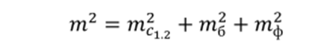
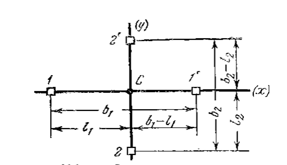
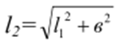
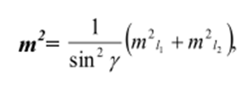
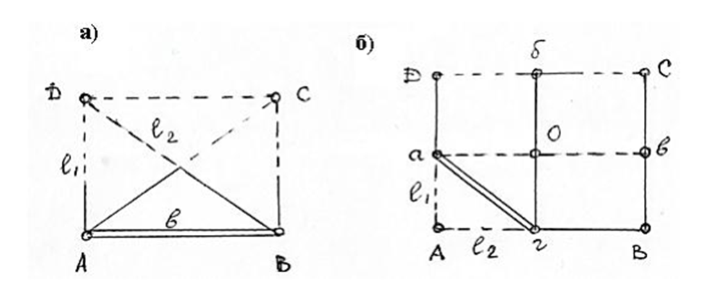
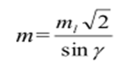
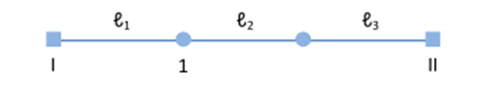
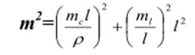
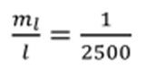
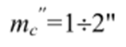

14-маруза Мавзу: Бино ва иншоотларни мукаммал режалаш усуллари.
Иншоотларни мукаммал режалаш бош ва асосий ўқларнинг жойда маҳкамланган нуқталарига нисбатан
амалга оширилади. Режалашнинг қуйидаги усуллари мавжуд: створ ва чизиқ кесиштириш усуллари,
қўшма усул (створ-чизиқ). Бундан ташқари тўғри бурчакли ва қутбий координаталар усуллари ҳам
қўлланилиши мумкин.
Створ кесиштириш усули. Бу усул билан жойда нуқтанинг ҳолати бинонинг қарама-қарши
томонларида жойлашган иккита створни кесиштириш орқали аниқланади. Одатда створлар теодолит
ёрдамида берилади (1-расм).
Створ кесиштириш усули асосан саноат иншоотлари ва турар жой биноларини режалашда,
қачонки створлар қурилиш ўқларига параллел бўлган ҳолларда қўлланилади.
Створ кесиштириш усулининг аниқлиги m- биринчи те, ва иккинчи те, створларни ясаш
аниқликлари, бошланғич маълумотлар хатолиги таъсири mi, ҳамда жойда топилган нуқтани
белгилаш тф аниқлигига боғлиқ бўлади. Буни қуйидаги ифода орқали ёзиш мумкин:

Створларни барпо этишдаги асосий хатоларга теодолитни марказлаштириш хатоси (т.), визир
маркаларини редукциялаш (m), визирлаш хатолиги (m), қараш трубасининг фокус масофасини
ўзгаришидаги йўл қўйиладиган хатолик m), ташқи муҳит таъсири (m)
хатоликлари киради.

1-расм. Створ кесиштириш усули.
Чизиқ кесиштириш усули. Бу усулда бинонинг характерли нуқталари жойда маҳкамланган
нуқталардан ўтказилган чизиқлар кесишишидан аниқланади. АВСД иншоотни (2, а-расм) чизиқ
кесиштириш усулида режалаш учун, қурилиш тўри ёки полигометрия томонига тегишли бўлган АВ =
в томоннинг А нуқтасидан рулетка ёрдамида АД=l1 масофани ўлчаб қўямиз.
В нуқтасидан эса иккинчи рулетка ёрдамида

масофани ўлчаймиз.
Рулеткаларда белгиланган l1 ва l2, кесмаларнинг кесишган жойида
бинога тегишли Д нуқта
ўрни аниқланади. Худди шу тартибда С нуқта топилади.
Иншоотнинг ўқлари маҳкамланган а, б, в, г нуқталар (21.2, б-расм) орқали режалаш учун а ва г
нуқталарга рулетканинг ноль шкаласи қўйилади
ва лойиҳавий масофалар 1, вa l, учлари кесишган нуқтада А белгиланади. Худди шу тартибда в
нуқтани ҳам топиш мумкин. Чизиқ кесиштириш усулининг аниқлиги қуйидаги ифода орқали
ҳисобланади:

Юқоридаги ифодани таҳлили шуни кўрсатадики, кесишиш бурчаги и тўғри бурчакка яқин бўлса,
мақсадга мувофиқ бўлади.

2-расм. Чизиқ кесиштириш усули.
Агарда ml1 = ml2 = ml, бўлса, у
ҳолда

Створ-чизиқ қўшма усули. Бу усулда лойиҳавий масофалар створ бўйлаб қўйилади. Бошланғич
пунктлар I ва II сифатида иншоотнинг бош ўқлари белгилари ҳисобланади (3-расм).

3-расм. Створ-чизиқ қўшма усули.
Одатда створ теодолит ёрдамида берилади, агарда кичик масофа бўлса, монтаж сими
ёрдамида ҳам
амалга оширилиши мумкин.
Бу усулнинг асосий хатолик манбалари бўлиб, створ ясаш (т.) ва лойиҳавий масофани қўйиш
(т)
ҳисобланади. Буни қуйидагича ифодалаш
мумкин.

Аниқ режалаш ишлари учун


деб қабул қилинади.